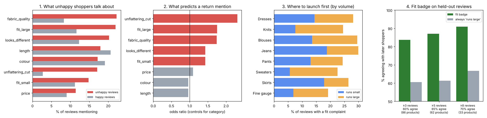

Fit & returns: why fashion shoppers send things back
Review analysis, a tested fit badge and a product proposal. Built for Myntra's Product Management internship.
36%of return mentions also mention fit
87% vs 61%fit badge agrees with later shoppers, vs always saying 'runs large'
2.3xreturn odds when the cut is called unflattering: the strongest driver
23,486real fashion reviews analysed
Try it: how sure should we be before showing a badge?
Each product's chance of truly running small comes from a Beta-Binomial model over its fit reviews. Higher confidence means fewer badges but fewer wrong ones.
See the badge on a product page
Open the product-page prototype (5 real products, real review lines).
Findings

Built by Pavitra Seth (BITS Pilani). Public data used as a stand-in; not affiliated with the company. Code and method: see the repository README.